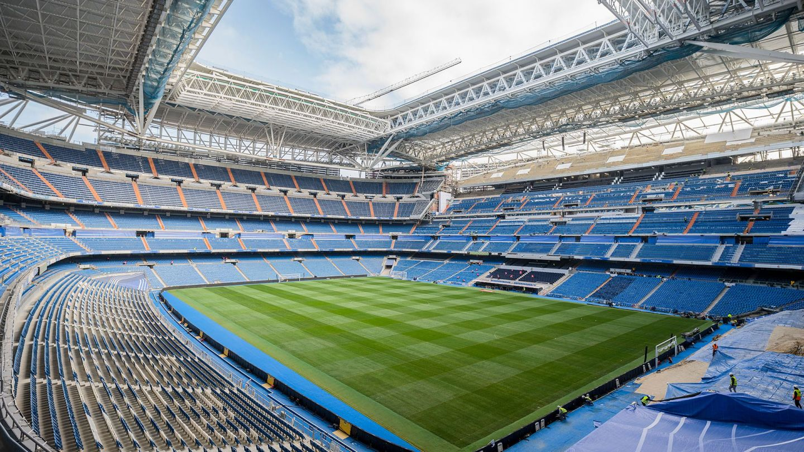

Event Details
Join us at the iconic Santiago Bernabéu Stadium for the FIFA Charity Match! Witness legends from Real Madrid and FC Porto compete in a thrilling game to support UNICEF's efforts for children worldwide.
Date: February 10, 2025
Time: 7:00 PM (Local Time)
Gates Open: 5:00 PM
Venue: Santiago Bernabéu Stadium, Madrid
Seats: 78,297 total seats
Tickets: Starting at €50 - Buy Now